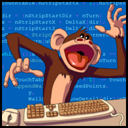

Worms 3D decompilation
Recovering the GameCube source code, function by function. I started this recovery for my native ports. Browse my source code or try Worms 3DS.
Exact match
Loading verified progress…
··· exact functions
··· inferred functions
··· executable code
In progress Full game rebuild pending
Code map
- main.dol / All regionsGray tiles are outside the function search or status filter.
Functions
| Function / address | Module | Size | Status |
|---|
No matching functions.
How progress is measured

Exact recompiled instruction bytes / all DOL executable bytes. Each byte is counted once. Inferred pseudocode and bounded behavior tests do not count as exact source. Full-game and 3DS validation are separate.